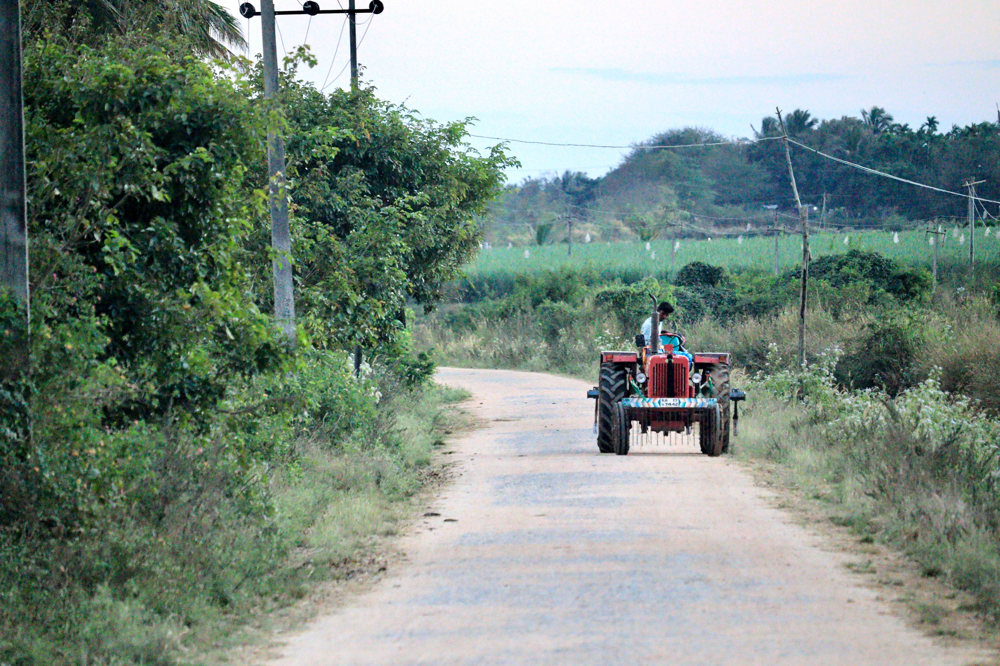
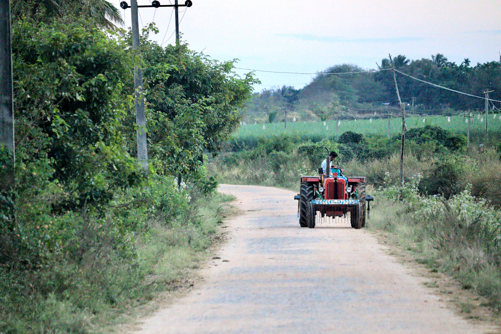

Tractor
A tractor is an engineering vehicle specifically designed to deliver a high tractive effort (or torque) at slow speeds,
for the purposes of hauling a trailer or machinery such as that used in agriculture, mining or construction. Most
commonly, the term is used to describe a farm vehicle that provides the power and traction to mechanize
agricultural tasks, especially (and originally) tillage, and now many more. Agricultural implements may be towed
behind or mounted on the tractor, and the tractor may also provide a source of power if the implement is mechanised.

Combine
The name derives from its combining four separate harvesting operations—reaping, threshing, gathering, and
winnowing—to a single process. Among the crops harvested with a combine are wheat, rice, oats, rye, barley, corn
(maize), sorghum, soybeans, flax (linseed), sunflowers and rapeseed. The separated straw, left lying on the field,
comprises the stems and any remaining leaves of the crop with limited nutrients left in it: the straw is then either
chopped, spread on the field and ploughed back in or baled for bedding and limited-feed for livestock
Rippers
Ripper loosens and aerates soil while leaving organic matter at the top of the soil.
Reduces the effects of compaction.
Ripper cuts weed roots below the surface.
Optional wide range of roller/ crumbler available, which helps in breaking bigger lumps to smaller clods.
It can be safely used for heavy duty applications as the shear bolt arrangement protects the implement from
getting damaged due to hidden obstacles like underground stones & roots.

Wheel Barrow

Seeder

Grain Trallers
Rake
Weeding Hoe

Sickle

Seed Drill

Thresher

Plow

Axe

Cultivator
One sense of the name refers to frames with teeth (also called shanks) that pierce the soil as they are dragged through it linearly.
It also refers to machines that use rotary motion of disks or teeth to accomplish a similar result.
.